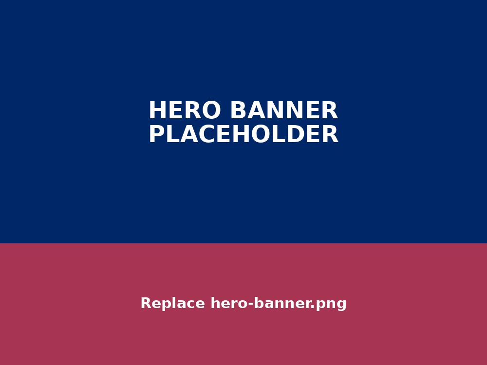

Kumaraguru Intra Ideathon'26
Think. Research. Innovate.A 36-Hour Research & Innovation Challenge designed exclusively for First-Year Students. Unlock deep inquiry across multidisciplinary problem realms.

About the Event
Pioneering early-stage scholarly engagement, systemic inquiry, and technical prototyping within Kumaraguru institutions.
About Ré
Ré – Centre for Exploratory Research serves as Kumaraguru College of Technology's premier student-driven research foundation, fostering scientific methodology and intellectual rigor.
About KII'26
An intensive 36-hour sprint curated exclusively for first-year engineering cohorts in interdisciplinary squads of 4 to 5 members across verified real-world problem statements.
Event at a Glance
₹10,000 Total Prize Pool
₹2,000 Cash Award for the Top Winning Team in each of the 5 Research Domains
5 Domains
Click any domain card to explore verified problem statements and technical briefs.
Life Sciences & Biosciences
Point-of-care bio-sensors, digital health telemetry, non-invasive diagnostics, and environmental bioremediation.
Software & Technology
Edge AI inference, distributed systems, secure communication protocols, and cloud-native analytics platforms.
Design & Textiles
Human-centered ergonomics, smart conductive wearable textiles, bio-mimetic products, and sustainable materials.
Automotive
EV powertrains, vehicle telemetry, battery thermal management, regenerative braking, and micro-mobility platforms.
Renewable Energy
Microgrid dynamic balancing, solar charge routing, next-gen energy storage, and decentralized power management.
Selection Process & Schedule
Portal opens for team formation and circle selection.
Submission of structured initial 2-page research briefs.
Selected cohorts announced for the 36-hr physical event.
Prototyping, final jury evaluation, and grant distribution.
Why Participate in KII'26?
Gain early research exposure and learn problem identification and analysis in your 1st year.
Work in an interdisciplinary team of 4-5 and receive mentorship and guidance throughout the Ideathon.
Develop ideas into projects and prototypes, explore Ré internship opportunities, access project funding, and get opportunities to participate in national-level ideathons.
₹10,000 Worth of Prizes
For the Top 5 Winning Teams · ₹2,000 per Domain WinnerBeyond the cash prizes, the Top 5 Teams get access to: Project Funding · Ré Internship Opportunity · National-Level Ideathon Opportunity · Continued Mentorship · Support for Research & Project Development.
Rules & Guidelines
1. General Rules expand_more
• The Ideathon is open exclusively to first-year students of Kumaraguru College of Technology (KCT).
• Teams must strictly consist of 4 to 5 members, with interdisciplinary collaboration encouraged.
• Participants must remain on campus throughout the Ideathon, from 6 October 2026 to 7 October 2026, and stay within the designated venue throughout the event.
• Day scholars must ensure that their lunch is taken on 6 October 2026 as instructed by the organizers.
2. Essential Items expand_more
• Participants must bring a laptop, charger, and any other necessary electronic gadgets and accessories.
• Participants staying overnight should carry personal items required for the two-day stay: clothes, blankets, air pillows, dental kits, soap and toiletries.
• Accommodation will be provided for day scholars as per the event arrangements.
3. Conduct & Discipline expand_more
• Follow all instructions issued by the organizing committee.
• Adhere to the institution's code of conduct and ethical standards.
• Maintain discipline and professionalism throughout the event.
• Respect fellow participants, mentors, faculty, staff, and organizers.
4. Event Guidelines expand_more
• Participants must remain within the campus throughout the event, and the prescribed formal dress code must be followed.
• Issued ID badges must be worn as instructed and returned in good condition.
• Teams must strictly follow the designated review and submission timelines.
5. Resources & Health/Safety expand_more
• Use all provided resources responsibly and ethically; participants are responsible for the safe handling of their own equipment and belongings.
• Stay hydrated, maintain a balanced diet, and keep the workspace clean and organized during the event.
• In case of any inconvenience or concern, immediately approach the organizing committee.
Ready to Begin Your Research Journey?
Registration opens 28 September 2026. Form your interdisciplinary squad of 4–5 minds and select your research track.
Register for KII'26